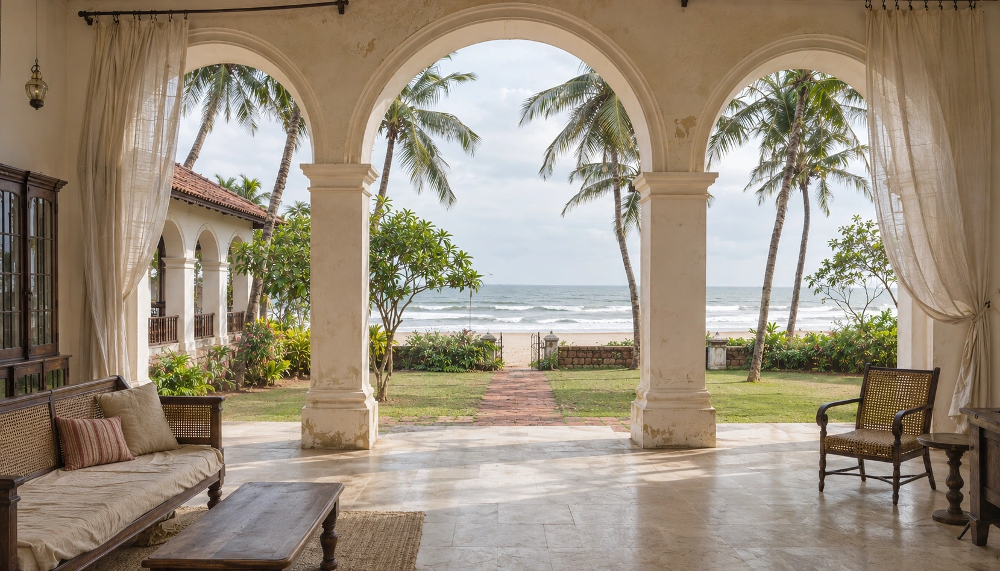
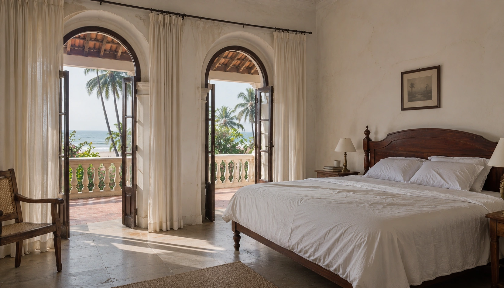
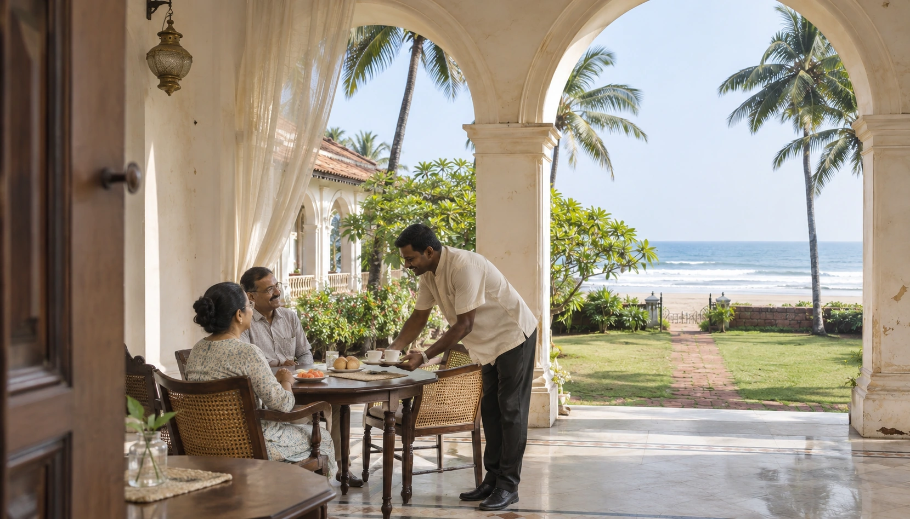
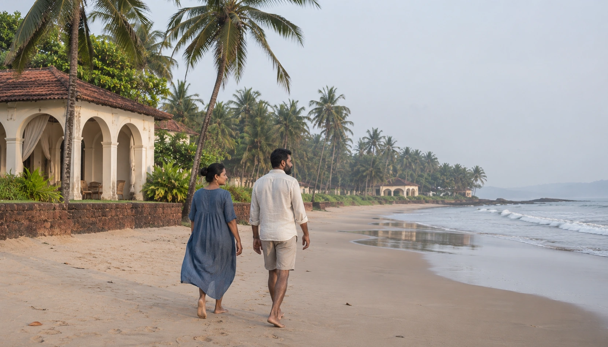
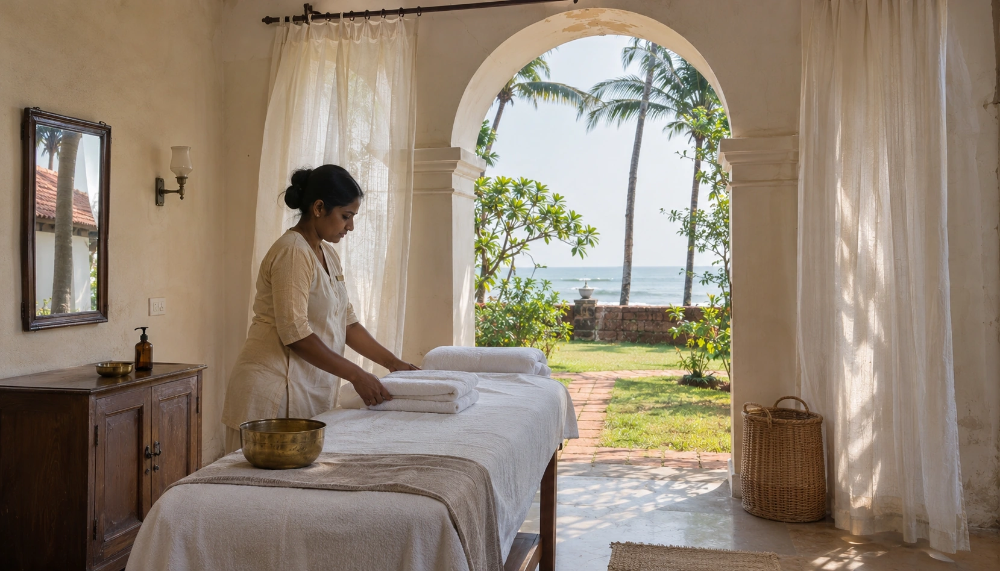

With every stay
- Breakfast at the house restaurant
- Pool access & beach towels
- Wi-Fi in rooms & shared spaces
- Daily housekeeping & drinking water

There is a quieter kind of extraordinary.
Beyond the palms, a different rhythm awaits. A coastal house shaped by Goan warmth, generous rooms and the quiet pleasure of being exactly where you are.
Find your corner of the coast ↗A path to
the beach
Suites & private
garden villas
Coastal dining
from morning to night
A pool, a spa
& time for yourself

Arched windows, soft linen and a private balcony overlooking the Arabian Sea.
The best stays leave fewer things to think about. Here is what belongs to your room, and what you can add to make it your own.
Tell us what matters to your stay. Room capacity, dietary needs and accessibility preferences are worth discussing before you arrive.

THE VERANDA / COASTAL TABLEMorning fruit and freshly brewed coffee. Goan flavours, the day's catch, and long conversations over dinner. Our kitchen follows the coast, and the pleasure of a well-set table.
Quiet rituals, local flavours and a little adventure. There is no prescribed way to spend a day here.

01 / AT YOUR OWN PACEBarefoot walks and unhurried sunsets. Beach access is part of your stay; swimming depends on local conditions.

02 / A MOMENT FOR YOURSELFMake space for a treatment in our wellness room. Tell us your preferences and we will help plan the details.
Discover Goan flavours at the veranda, or ask about a private dining arrangement for a special evening.
Good anticipation makes for a better stay.
The room plan shown includes breakfast, Wi-Fi, daily housekeeping, drinking water, pool access and beach towels. Spa treatments, transfers, other meals and outings are additional. Review your selected plan before confirming.
Plan to arrive from 3:00 PM and depart by 11:00 AM. Early arrival and late departure are subject to arrangement and may carry an additional charge.
Families are welcome. Each room shows its capacity. Tell us the number and ages of children before arranging extra beds, cots or dining preferences; supplements depend on the final plan.
The stay planner helps you explore dates and estimated room costs. It does not reserve inventory or collect payment. Your final quotation should confirm availability, taxes, deposit and cancellation terms before any booking is accepted.
Please discuss your specific requirements before choosing a room. Heritage buildings and garden paths can include steps. Vegetarian dishes are available; share allergies and dietary requests in advance so suitability can be checked.
The landscape turns lush and the house takes on a quieter rhythm. Sea swimming, boat trips, beach arrangements and outdoor dining depend on weather and local safety guidance.